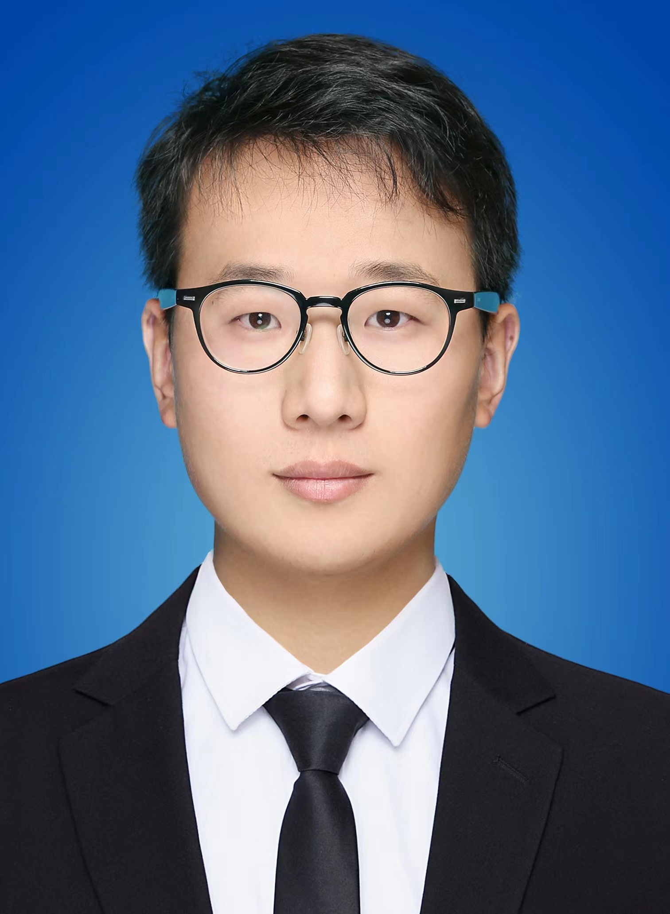

Lecturer at NCAM in Chongqing
qkai94@163.com
Office 213, Huixian Building, CQNU
Currently, I am a lecturer of National Center of Applied Mathematics in Chongqing. Up to present, my research has appeared in IEEE TNNLS, Knowledge-based Systems, Expert Systems with Applications and so on.
Previously, I received my BSc and PhD degrees in College of Mathematics and Statistics from Chongqing University (CQU) in 2017 and 2023 respectively, where I was fortunate to be supervised by Prof. Hu Yang.
My current research focuses on the interface of statistical regularization theories and machine learning. Several interested topics include support vector machine, feature selection, dimension reduction and data mining.